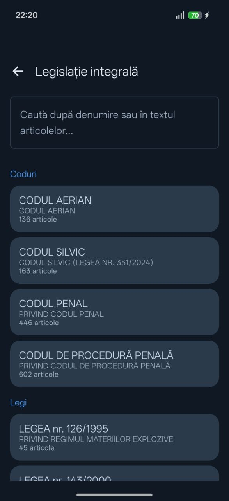
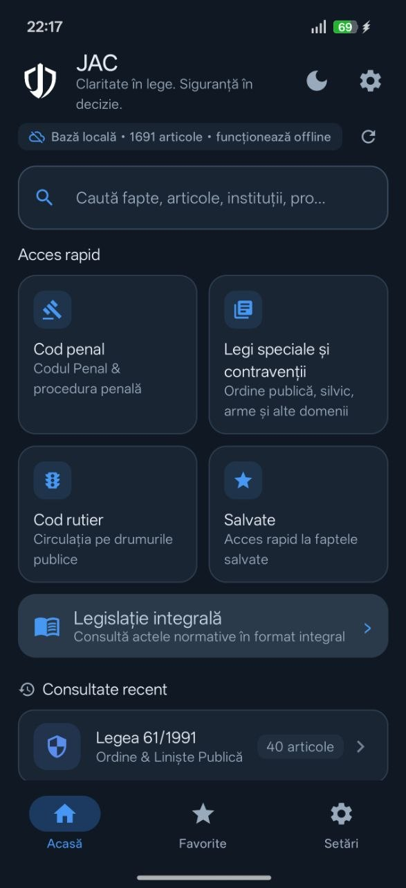
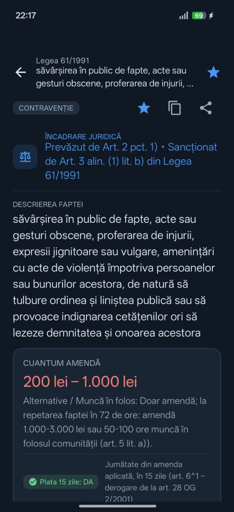
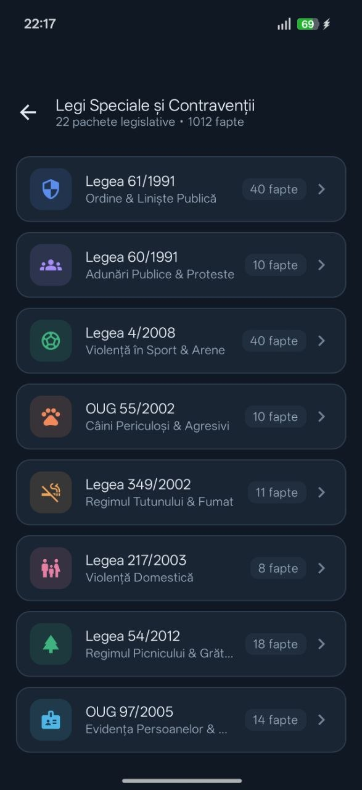
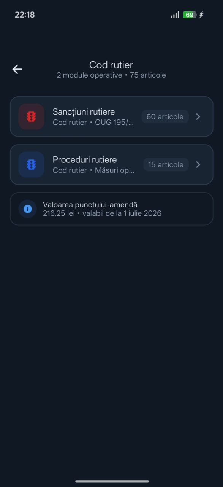
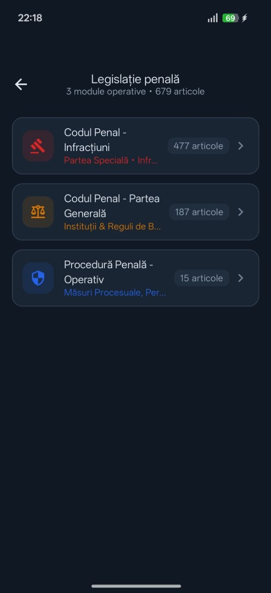
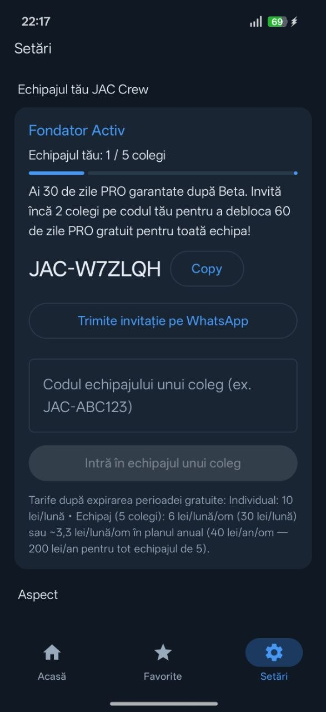

Legislație integrală
27 acte normative · 2.696 articole
GRATUIT pentru totdeaunaGhidul legislativ JAC pentru forțele de ordine din România: JAC MAI — JAC Poliție, JAC Jandarmerie și JAC Poliția de Frontieră. Articolele, sancțiunile și procedurile, la un tap, 100% offline.

Aplicația JAC este ghidul legislativ digital de informare și căutare rapidă, gândit pentru ritmul din teren. Cu legislația offline JAC, alegi domeniul, găsești fapta și vezi imediat încadrarea juridică, sancțiunea și măsurile complementare — fără semnal.

25 de module operaționale și 1.691 de fapte, împărțite pe domenii — plus legislația integrală.

27 acte normative · 2.696 articole
GRATUIT pentru totdeauna
22 pachete legislative · 1.012 fapte

2 module operaționale · 75 fapte
+ valoarea punctului-amendă, actualizată

3 module operative · 679 fapte
O parte din aplicația JAC rămâne gratuită pentru totdeauna. PRO deblochează tot restul.
Tot ce e esențial, fără cont și fără costuri.
Pentru cine lucrează în teren zilnic.
Toate funcțiile PRO sunt 100% gratuite, iar reclamele sunt oprite complet.
Instalează aplicația acum, creează cont și ai garantat 30 de zile PRO gratuit după terminarea Beta-ului.
Nu patrula singur! Dacă aduni minim 3 colegi (din max. 5) în echipajul tău, folosind codul tău, TOȚI primiți 60 de zile PRO gratuit la lansarea oficială!
| Plan | Preț |
|---|---|
Individual un singur cont | 10 lei/lună |
Echipaj (5 colegi) — lunar 6 lei/lună/om | 30 lei/lună |
Echipaj (5 colegi) — anual Recomandat ~3,3 lei/lună/om | 40 lei/an/om 200 lei/an / echipaj |

Instalează aplicația JAC acum, în Open Beta: PRO gratuit, fără reclame, plus bonusurile de Fondator și JAC Crew.
Descarcă aplicația JAC